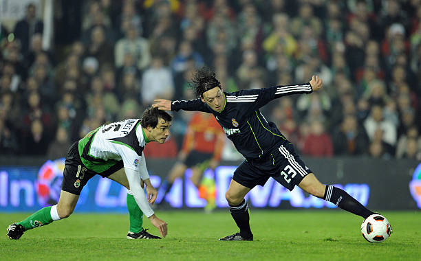
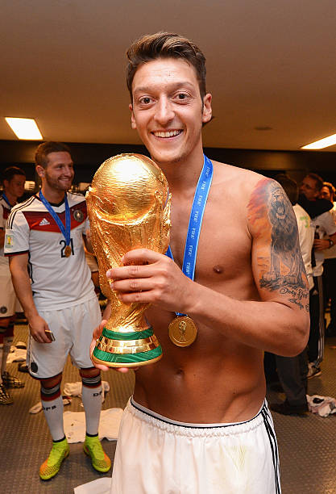
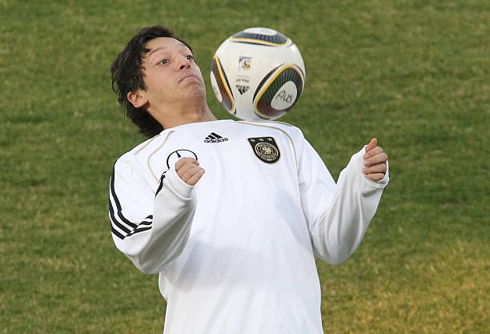
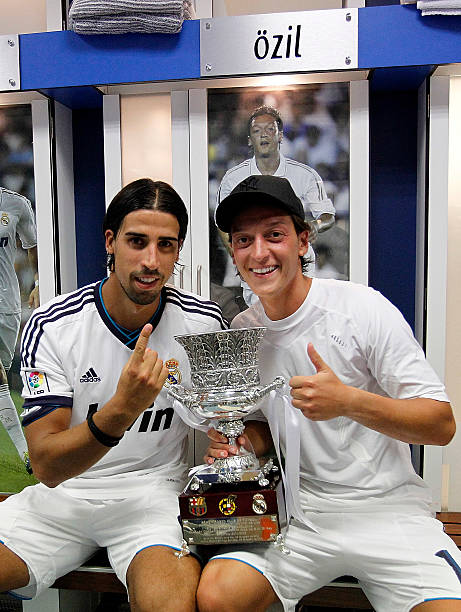
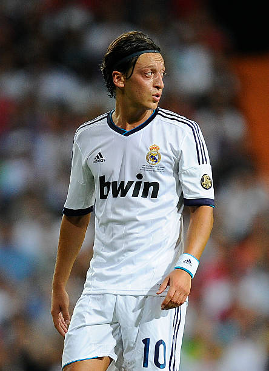
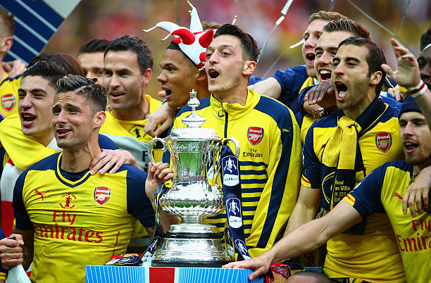

About The Wizard



200+
Career Assists
The pinnacle of international football, conquered with German excellence.



2014
World Cup Winner
The pinnacle of international football, conquered with German excellence.



500+
Pro Appearances
Representing the world's biggest clubs with grace and skill i tried doing your index bruh.